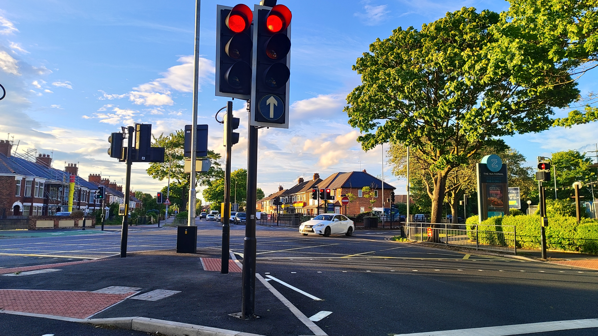

Cllr Peter North
Bricknell Ward • Local Councillor
Pedestrian Crossing Finally Arrives!
16 June 2026

It’s been two years since I met with the Portfolio Holder for Highways and discussed a match funded project to install a pelican crossing on National Avenue and County Road North near the National Pub, and over the summer it was finally completed!
This crossing point will be a huge benefit to residents nearby, who before now had no option but to cross unassisted at this notorious junction.
NEXT UP - Work continues on re-establishing the attendant crossing near the drain on National Avenue. Modifications to the road layout are required before we can put an attendant back in place - we’re moving as fast as we can!